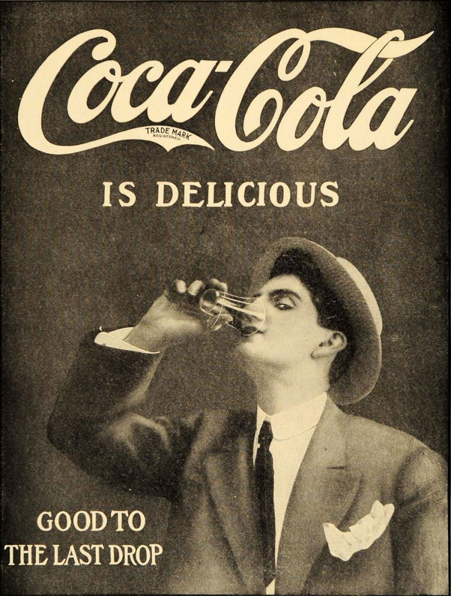
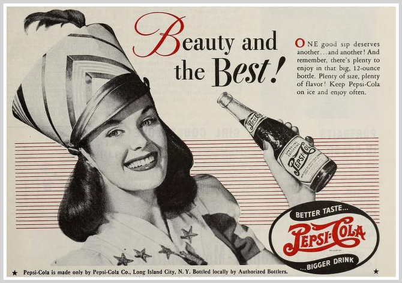
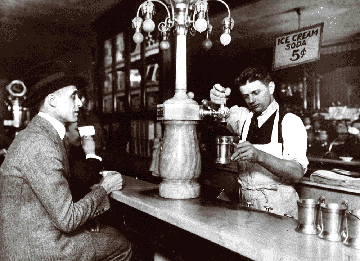

The History of Soda
The story of soda begins in the 18th century when the first carbonated beverages were created. These early sodas were made by infusing water with carbon dioxide, creating the fizz that would become so beloved.
Coca-Cola
Coca-Cola was invented in 1886 by John Pemberton, a pharmacist in Atlanta, Georgia. Originally marketed as a medicinal tonic, Coca-Cola quickly gained popularity as a refreshing beverage. By the turn of the 20th century, it was being sold across the United States and had become a cultural icon.
Pepsi
Pepsi was created by Caleb Bradham, a pharmacist from New Bern, North Carolina, in 1893. Initially called "Brad's Drink," it was renamed Pepsi-Cola in 1898. Pepsi's early success was due to its unique flavor and effective marketing strategies, positioning itself as a strong competitor to Coca-Cola.
Early 20th Century
During the early 20th century, soda fountains became popular gathering places in the United States. These establishments not only served soda but also acted as social hubs. The role of the "soda jerk" became an iconic part of American culture during this period.
Sodas were sold in glass bottles, and the designs of these bottles became highly distinctive and recognizable. Both Coca-Cola and Pepsi used innovative marketing and branding techniques to build their identities and foster customer loyalty.
